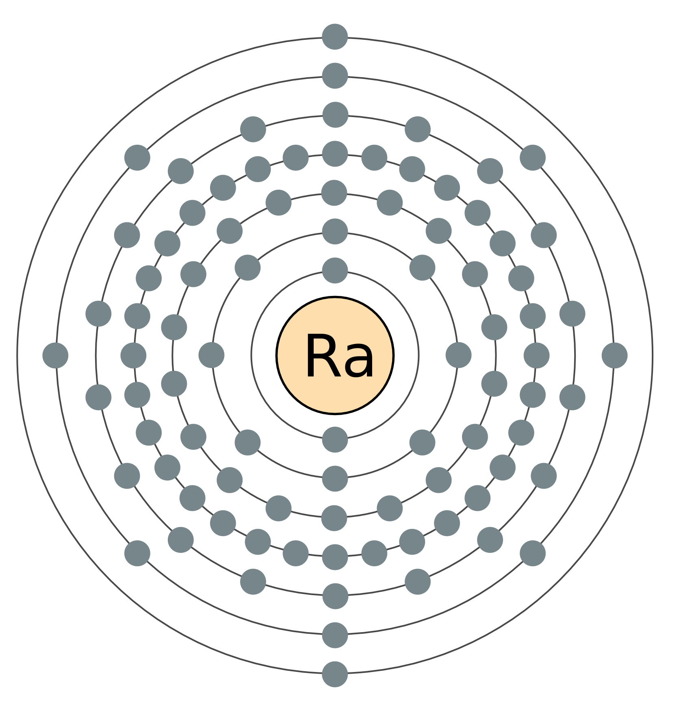

Радий (химический символ — Ra, от лат. Radium) — химический элемент 2-й группы (по устаревшей классификации — главной подгруппы второй группы, IIA), седьмого периода периодической системы химических элементов Д. И. Менделеева, с атомным номером 88.
Простое вещество радий — это блестящий щелочноземельный металл серебристо-белого цвета, быстро тускнеющий на воздухе. Обладает высокой химической активностью, очень ядовит. Соединения радия намного более токсичны, чем соединения бария, из-за высокой радиоактивности радия.
Радиоактивен. Наиболее устойчив нуклид 226Ra (период полураспада около 1600 лет).
Французские учёные Пьер и Мария Кюри обнаружили, что отходы, остающиеся после выделения урана из урановой руды (урановая смолка, добывавшаяся в городе Иоахимсталь, Чехия), более радиоактивны, чем чистый уран. Из этих отходов супруги Кюри после нескольких лет интенсивной работы выделили два сильно радиоактивных элемента: полоний и радий. Первое сообщение об открытии радия (в виде смеси с барием) Кюри сделали 26 декабря 1898 года во Французской академии наук. В 1910 году Мария Кюри и Андре Дебьерн выделили чистый радий путём электролиза хлорида радия на ртутном катоде и последующей дистилляции в водороде. Выделенный элемент представлял собой, как сейчас известно, изотоп радий-226, продукт распада урана-238. За открытие радия и полония супруги Кюри получили Нобелевскую премию. Радий образуется через многие промежуточные стадии при радиоактивном распаде изотопа урана-238 и поэтому находится в небольших количествах в урановой руде.
• Вернуться к списку химических элементов